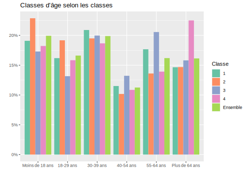

Section 15 Clustering : application sur le RP 2018
15.1 Choix des variables et préparation du tableau final
Notre objectif est ici de décrire une commune ou un groupe de communes, en rassemblant des zones infracommunales (IRIS) qui se ressemblent ou sont relativement homogènes, c’est-à-dire qui ont des caractéristiques proches. Mais, bien sûr, les méthodes de clustering peuvent être appliquées à toutes sortes de problématiques et de données.
Il faut ainsi d’abord réfléchir à quelles caractéristiques on veut s’intéresser, c’est-à-dire quelles variables on veut mettre en entrées/input du clustering.
Pour cela, on doit avoir un tableau avec n individus ou observations (lignes) et p variables (colonnes), la mesure des variables peut être des effectifs, mais aussi des proportions. L’idée étant de regrouper nos IRIS en classes homogènes (=clusters) en un nombre plus restreint, nos individus sont donc constitués ici par les IRIS. Il faut ensuite choisir sur quelles caractéristiques on va les regrouper et chercher une certaine homogénéité. Cela peut être à partir de plein de choses selon notre base de données : caractéristiques socio-démographiques de la population, caractéristiques d’emploi des seuls actifs occupés habitant la commune, caractéristiques des ménages habitant la commune, caractéristiques des logements, etc.
15.1.1 Variables socio-professionnelles caractérisant les individus/habitants de notre commune
On va dans cet exemple (communes de l’Est parisien constitué des 11ème, 12ème et 20ème arrondissements de Paris) s’intéresser aux caractéristiques socio-professionnelles de la population : on aura en lignes nos n IRIS des 3 arrondissements et en colonnes nos variables d’entrées, soient par exemple le nombre d’habitants, le nombre d’individus qui sont actuellement chômeurs, le nombre de cadres, le nombre d’individus qui ont moins de 15 ans, etc.
On va alors réutiliser les deux fonctions créées précédemment sum_var_IRIS() et tab_cont_n_iris().
Pour caractériser la population par IRIS à partir de variables socio-professionnnelles, on peut choisir des variables classiques du type : - catégorie socio-professionnelle (CS1) ; - diplôme le plus élevé (DIPL, à recoder pour avoir moins de modalités) ; - type d’activités (TACT) dont nombre d’élèves ou étudiants ; - situation quant à l’immigration (IMMI) ; - sexe (SEXE).
Il faudra néanmoins faire attention à ce que certaines modalités ne se recoupent pas entre elles, notamment quand l’information sur la population de plus de 14 ans est rassemblée dans une modalité spécifique, ou quand l’information est trop proche - par exemple la CS et le diplôme. Mais on pourra le faire dans un second temps en étudiant la corrélation entre les variables finalement obtenues.
Regardons d’abord pour quelles variables un regroupement et recodage des modalités est nécessaire, avant d’appliquer nos fonctions de tableaux de contingence.
Pour la variable de CS, il faudra peut-être ne pas prendre en compte le nombre d’agriculteurs exploitants qui risque d’être très faible dans cette commune (et dans ce département de manière générale).
meta %>%
select(COD_VAR, COD_MOD, LIB_MOD) %>%
filter(COD_VAR=="CS1")# A tibble: 8 x 3
COD_VAR COD_MOD LIB_MOD
<chr> <chr> <chr>
1 CS1 1 Agriculteurs exploitants
2 CS1 2 Artisans, commerçants et chefs d'entreprise
3 CS1 3 Cadres et professions intellectuelles supérieures
4 CS1 4 Professions Intermédiaires
5 CS1 5 Employés
6 CS1 6 Ouvriers
7 CS1 7 Retraités
8 CS1 8 Autres personnes sans activité professionnelle Pour la variable de diplôme :
meta %>%
select(COD_VAR, COD_MOD, LIB_MOD) %>%
filter(COD_VAR=="DIPL")# A tibble: 13 x 3
COD_VAR COD_MOD LIB_MOD
<chr> <chr> <chr>
1 DIPL 01 Pas de scolarité ou arrêt avant la fin du primaire
2 DIPL 02 Aucun diplôme et scolarité interrompue à la fin du primai~
3 DIPL 03 Aucun diplôme et scolarité jusqu’à la fin du collège o~
4 DIPL 11 CEP (certificat d’études primaires)
5 DIPL 12 BEPC, brevet élémentaire, brevet des collèges, DNB
6 DIPL 13 CAP, BEP ou diplôme de niveau équivalent
7 DIPL 14 Baccalauréat général ou technologique, brevet supérieur,~
8 DIPL 15 Baccalauréat professionnel, brevet professionnel, de techni~
9 DIPL 16 BTS, DUT, Deug, Deust, diplôme de la santé ou du social de~
10 DIPL 17 Licence, licence pro, maîtrise, diplôme équivalent de niv~
11 DIPL 18 Master, DEA, DESS, diplôme grande école niveau bac+5, doct~
12 DIPL 19 Doctorat de recherche (hors santé)
13 DIPL ZZ Hors champ (moins de 14 ans) Là aussi, il faut regrouper les modalités, par exemple comme ceci : “Peu ou pas diplomés” (en-dessous du Bac), “Bac” (quel que soit le type), “Bac+2”, “Bac+3ou4”, “Bac+5ou+”
Et enfin, pour la variable du type d’activités :
meta %>%
select(COD_VAR, COD_MOD, LIB_MOD) %>%
filter(COD_VAR=="TACT")# A tibble: 7 x 3
COD_VAR COD_MOD LIB_MOD
<chr> <chr> <chr>
1 TACT 11 Actifs ayant un emploi, y compris sous apprentissage ou en st~
2 TACT 12 Chômeurs
3 TACT 21 Retraités ou préretraités
4 TACT 22 Élèves, étudiants, stagiaires non rémunéré de 14 ans ou~
5 TACT 23 Moins de 14 ans
6 TACT 24 Femmes ou hommes au foyer
7 TACT 25 Autres inactifs On pourra regrouper les 3 dernières modalités comme une catégorie large d’inactifs (‘23’,‘24’,‘25’). Par ailleurs, il faudra faire attention à certaines modalités qui peuvent être proches de celles de la variable de CS, par exemple pour les retraités, ou les inactifs.
15.1.2 Création des différents tableaux de contingence
On crée maintenant nos différents tableaux de contingence.
# Pour la variable du nombre d'habitants
Nbhab <- RP %>% sum_var_IRIS(codedept=" ", codecom = c("75111", "75112", "75120"),
IRIS, nom_var = nbhab)
# Pour la variable d'âge :
Age <- RP %>%
mutate(AGE=case_when(AGER20 %in% c("2","5","10","14","17") ~ "Moins18ans",
AGER20 %in% c("19","24","29") ~ "18-29ans",
AGER20 == "39" ~ "30-39ans",
AGER20 == "54" ~ "40-54ans",
AGER20 == "64" ~ "55-64ans",
AGER20 %in% c("79", "80") ~ "Plus64ans")) %>%
tab_cont_n_iris(codedept=" ", codecom = c("75111", "75112", "75120"), IRIS, AGE,
nom_var = nbage, var=AGE, prefix_var="nb_")
# Pour la variable de sexe :
Sexe <- RP %>%
mutate(SEXE = factor(SEXE, labels=c("Homme", "Femme"))) %>%
tab_cont_n_iris(codedept=" ", codecom = c("75111", "75112", "75120"), IRIS, SEXE,
nom_var = nbsexe, var=SEXE, prefix_var="nb_")
# Pour la variable de CS :
CS <- RP %>%
tab_cont_n_iris(codedept=" ", codecom = c("75111", "75112", "75120"), IRIS, CS1,
nom_var = nbCS, var=CS1, prefix_var="nbCS_")
# Pour la variable de diplôme :
Dipl <- RP %>%
mutate(Dipl=case_when(DIPL %in% c("01","02","03","11","12","13") ~ "Peu_pas diplomés",
DIPL %in% c("14","15") ~ "Bac", DIPL == "16" ~ "Bacplus2",
DIPL == "17" ~ "Bacplus3ou4",
DIPL %in% c("18","19") ~ "Bacplus5ouplus",
DIPL == "ZZ" ~ "Moins14ans")) %>%
tab_cont_n_iris(codedept=" ", codecom = c("75111", "75112", "75120"), IRIS, Dipl,
nom_var = nbdipl, var=Dipl, prefix_var="nb_")
# Pour la variable d'activité
activite <- RP %>%
mutate(activite = case_when(TACT == "11" ~ "actifs_occ",
TACT == "12" ~ "chômeurs",
TACT == "22" ~ "eleves_etudiants",
TACT %in% c("21","23","24","25") ~ "inactifs")) %>%
tab_cont_n_iris(codedept=" ", codecom = c("75111", "75112", "75120"), IRIS, activite,
nom_var = Nbactivite, var=activite, prefix_var="Nbactivite_")
# Pour la variable de statut conjugual :
statu_conj <- RP %>%
mutate(statu_conj=case_when(STAT_CONJ %in% c("1","2") ~ "1et2",
STAT_CONJ == "3" ~ "3", STAT_CONJ %in% c("4","5") ~ "4",
STAT_CONJ == "6" ~ "6")) %>%
tab_cont_n_iris(codedept=" ", codecom = c("75111", "75112", "75120"), IRIS, statu_conj,
nom_var = NbStatuconj, var=statu_conj, prefix_var="NbStatuconj_")
# Pour la variable d'année d'emménagement:
ann_em <- RP %>%
mutate(ann_em = case_when(ANEMR == '00' ~ "Moins de 2 ans",
ANEMR == '01' ~ "De 2 à 4 ans",
ANEMR == '02' ~ "De 5 à 9 ans",
ANEMR == '03' ~ "De 10 à 19 ans",
ANEMR == '04' ~ "De 20 à 29 ans",
TRUE ~ "30 ou plus")) %>%
tab_cont_n_iris(codedept=" ", codecom = c("75111", "75112", "75120"), IRIS, ann_em,
nom_var = Nbann_em, var=ann_em, prefix_var="Nbann_em_")
# Pour la variable de lieu de naissance
lieu_naiss <- RP %>%
mutate(lieu_naiss = case_when(INAI == "1" ~ "même_dept",
INAI == "2" ~ "autre_dept",
INAI %in% c("3", "4", "5") ~ "autre_region",
INAI == "6" ~ "étranger")) %>%
tab_cont_n_iris(codedept=" ", codecom = c("75111", "75112", "75120"), IRIS, lieu_naiss,
nom_var = Nblieu_naiss, var=lieu_naiss, prefix_var="Nblieu_naiss_")
# Pour la variable renseignant du nombre d'immigrés :
Immi <- RP %>%
filter(IMMI=="1") %>%
sum_var_IRIS(codedept=" ", codecom = c("75111", "75112", "75120"), IRIS, nom_var = nbimmi)15.1.3 Création du tableau final
On va rassembler tous ces tableaux et donc ces informations en un seul tableau. Comme on a plus de 2 tableaux à fusionner, on utilise une liste dans laquelle on stocke l’ensemble de nos tableaux, et ensuite on utilise une jointure avec left_join, mais en passant par la fonction reduce() du package purr() qui est inclus dans tidyverse pour l’appliquer à notre liste de tableaux.
list_tab <- list(data.frame(Nbhab), data.frame(Age), data.frame(Sexe), data.frame(CS),
data.frame(Dipl), data.frame(activite), data.frame(statu_conj),
data.frame(ann_em), data.frame(lieu_naiss), data.frame(Immi))
clust <- data.frame(purrr::reduce(list_tab, left_join, by='IRIS'))
head(clust)# A tibble: 6 x 43
IRIS nbhab nb_18~1 nb_30~2 nb_40~3 nb_55~4 nb_Mo~5 nb_Pl~6 nb_Ho~7 nb_Fe~8
<fct> <dbl> <dbl> <dbl> <dbl> <dbl> <dbl> <dbl> <dbl> <dbl>
1 7511141~ 3145 648 502 577 377 542 500 1543 1602
2 7511141~ 2335 650 531 429 240 214 272 1198 1138
3 7511141~ 1824 488 354 315 188 269 210 901 923
4 7511141~ 1547 447 323 288 136 210 143 773 774
5 7511141~ 1932 426 377 375 202 272 279 957 974
6 7511141~ 2622 575 480 595 227 402 342 1332 1289
# ... with 33 more variables: nbCS_2 <dbl>, nbCS_3 <dbl>, nbCS_4 <dbl>,
# nbCS_5 <dbl>, nbCS_6 <dbl>, nbCS_7 <dbl>, nbCS_8 <dbl>, nbCS_1 <dbl>,
# nb_Bac <dbl>, nb_Bacplus2 <dbl>, nb_Bacplus3ou4 <dbl>,
# nb_Bacplus5ouplus <dbl>, nb_Moins14ans <dbl>, nb_Peu_pas.diplomés <dbl>,
# Nbactivite_actifs_occ <dbl>, Nbactivite_chômeurs <dbl>,
# Nbactivite_eleves_etudiants <dbl>, Nbactivite_inactifs <dbl>,
# NbStatuconj_1et2 <dbl>, NbStatuconj_3 <dbl>, NbStatuconj_4 <dbl>, ...
# i Use `colnames()` to see all variable names# On supprime les tables intermédiaires pour ne pas surchager notre environnement
rm(Nbhab, Age, Sexe, CS, Dipl, activite, statu_conj, ann_em, lieu_naiss, Immi)On va rajouter le nom des IRIS pour cette commune et l’inclure comme identifiant dans le tableau, c’est-à-dire dans le nom de la 1ère colonne (avec la fonction row.names()), cela peut être conseillé pour la procédure de clustering, afin que chaque IRIS soit bien identifié par son nom (label) ; on verra toutefois dans notre exemple que cela devient illisible si on a trop d’IRIS/individus. Pour cela, on va récupérer le nom des IRIS dans le fichier de métadonnées “meta”, en changeant l’encodage avec la fonction parse_character() et en supprimant l’information entre parenthèses avec la fonction str_replace() pour n’avoir que le numéro de l’IRIS :
# On récupère les noms des IRIS dans le fichier de métadonnées "meta"
list_nom_IRIS <- meta %>%
mutate(COM = substr(COD_MOD, 1, 5)) %>%
select(COD_VAR, COD_MOD, LIB_MOD, COM) %>%
filter(COD_VAR == "IRIS" & COM %in% c("75111", "75112", "75120")) %>%
rename(IRIS = COD_MOD) %>%
select(LIB_MOD, IRIS)
# On indique le bon encodage pour que R reconnaisse les accents
list_nom_IRIS$LIB_MOD <- parse_character(list_nom_IRIS$LIB_MOD,
locale = locale(encoding = "UTF-8"))
# On supprime la fin du nom qui est entre parenthèse gràce à une expression régulière
list_nom_IRIS$LIB_MOD <- str_replace(list_nom_IRIS$LIB_MOD, " \\s*\\([^\\)]+\\)", "")
clust <- left_join(clust, list_nom_IRIS, by="IRIS")
row.names(clust) <- clust$LIB_MOD
head(clust)# A tibble: 6 x 44
IRIS nbhab nb_18~1 nb_30~2 nb_40~3 nb_55~4 nb_Mo~5 nb_Pl~6 nb_Ho~7 nb_Fe~8
<chr> <dbl> <dbl> <dbl> <dbl> <dbl> <dbl> <dbl> <dbl> <dbl>
1 7511141~ 3145 648 502 577 377 542 500 1543 1602
2 7511141~ 2335 650 531 429 240 214 272 1198 1138
3 7511141~ 1824 488 354 315 188 269 210 901 923
4 7511141~ 1547 447 323 288 136 210 143 773 774
5 7511141~ 1932 426 377 375 202 272 279 957 974
6 7511141~ 2622 575 480 595 227 402 342 1332 1289
# ... with 34 more variables: nbCS_2 <dbl>, nbCS_3 <dbl>, nbCS_4 <dbl>,
# nbCS_5 <dbl>, nbCS_6 <dbl>, nbCS_7 <dbl>, nbCS_8 <dbl>, nbCS_1 <dbl>,
# nb_Bac <dbl>, nb_Bacplus2 <dbl>, nb_Bacplus3ou4 <dbl>,
# nb_Bacplus5ouplus <dbl>, nb_Moins14ans <dbl>, nb_Peu_pas.diplomés <dbl>,
# Nbactivite_actifs_occ <dbl>, Nbactivite_chômeurs <dbl>,
# Nbactivite_eleves_etudiants <dbl>, Nbactivite_inactifs <dbl>,
# NbStatuconj_1et2 <dbl>, NbStatuconj_3 <dbl>, NbStatuconj_4 <dbl>, ...
# i Use `colnames()` to see all variable namestail(clust)# A tibble: 6 x 44
IRIS nbhab nb_18~1 nb_30~2 nb_40~3 nb_55~4 nb_Mo~5 nb_Pl~6 nb_Ho~7 nb_Fe~8
<chr> <dbl> <dbl> <dbl> <dbl> <dbl> <dbl> <dbl> <dbl> <dbl>
1 7512080~ 1751 229 183 312 178 262 588 728 1023
2 7512080~ 2119 314 297 439 287 473 310 965 1155
3 7512080~ 3191 535 423 692 351 651 538 1461 1730
4 7512080~ 2862 517 504 665 314 639 225 1382 1480
5 7512080~ 1843 351 343 360 261 197 331 939 904
6 75120XX~ 5 0 0 2 1 2 0 3 2
# ... with 34 more variables: nbCS_2 <dbl>, nbCS_3 <dbl>, nbCS_4 <dbl>,
# nbCS_5 <dbl>, nbCS_6 <dbl>, nbCS_7 <dbl>, nbCS_8 <dbl>, nbCS_1 <dbl>,
# nb_Bac <dbl>, nb_Bacplus2 <dbl>, nb_Bacplus3ou4 <dbl>,
# nb_Bacplus5ouplus <dbl>, nb_Moins14ans <dbl>, nb_Peu_pas.diplomés <dbl>,
# Nbactivite_actifs_occ <dbl>, Nbactivite_chômeurs <dbl>,
# Nbactivite_eleves_etudiants <dbl>, Nbactivite_inactifs <dbl>,
# NbStatuconj_1et2 <dbl>, NbStatuconj_3 <dbl>, NbStatuconj_4 <dbl>, ...
# i Use `colnames()` to see all variable namesOn remarque que la dernière ligne représente une IRIS qui compte moins de 200 habitants, on va la supprimer. Par ailleurs, on va également supprimer les deux IRIS correspondant au bois de Vincennes, même s’il y a des habitants, ces 2 IRIS sont bien trop particuliers pour être pris en compte dans notre analyse de clustering. Il y aura donc des données manquantes pour ces 2 quartiers dans la carte finale qu’on réalisera avec la répartition des IRIS selon les clusters obtenus…
clust <- clust %>% filter(!IRIS %in% c("75120XXXX", "751124677", "751124577"))
# à voir aussi : Bercy 7 (751124707) et Quinze-Vingts 13 (751124813), voire Père Lachaise 5 (751207905)15.1.4 choix des variables actives dans le clustering
Il nous reste, en dernière étape, de choisir les variables à inclure dans le clustering et vérifier si certaines d’entre elles ne sont pas corrélées, c’est-à-dire ne donnent pas la même information. Cela est important car sinon dans la procédure de clustering, cela s’apparente à donner un poids supérieur à une information si on la met en double voire en triple par exemple. C’est typiquement le cas pour la variable de CS “Retraités” et la variable d’activité “Retraités ou préretraites” : si on les laisse toutes les deux, la même information va peser 2 fois dans l’analyse.
Pour simplifier la procédure et surtout l’interprétation des résultats, on va réaliser un clustering avec quelques variables socio-professionnelles.
On peut vérifier la corrélation à l’aide d’une fonction comme cor() combinées avec la fonction symnum(), ou rcorr() du package Hmisc, ou corrplot() du package du même nom, ou encore pairs(). Attention toutefois, ces fonctions ne s’appliquent que sur des variables numériques, il nous faut donc sélectionner les colonnes sans la première (code IRIS), ni la dernière (libellé IRIS), ou en sélectionnant les seules variables qui nous intéressent. On ne va utiliser ici que cor() et corrplot() qui permettent toutes deux des visualisations assez jolies en ajoutant quelques options. Attention bis (!) : comme ici nous avons beaucoup de variables, il vaut mieux sélectionner des variables par groupe de 10 ou 15 par exemple car sinon cela peut-être illisible selon les fonctions !
# Pour le clustering sur les variables socio-professionnelles :
# - catégorie socio-professionnelle (`CS1`) ; - diplôme le plus élevé (`Dipl`) ;
# - type d'activités (`TACT`) ; - situation quant à l'immigration (`IMMI`) ;
# - sexe (`SEXE`).
cor(clust[ , c("nbCS_1", "nbCS_2", "nbCS_3", "nbCS_4", "nbCS_5", "nbCS_6", "nbCS_7",
"nbCS_8", "Nbactivite_actifs_occ", "Nbactivite_chômeurs",
"Nbactivite_eleves_etudiants", "Nbactivite_inactifs",
"nb_Bac", "nb_Bacplus2", "nb_Bacplus3ou4","nb_Bacplus5ouplus",
"nb_Moins14ans", "nb_Peu_pas.diplomés", "nbimmi", "nb_Femme")]) nbCS_1 nbCS_2 nbCS_3 nbCS_4
nbCS_1 1.000000000 0.06913325 0.108685116 -0.008965482
nbCS_2 0.069133254 1.00000000 0.626901951 0.637284571
nbCS_3 0.108685116 0.62690195 1.000000000 0.670160776
nbCS_4 -0.008965482 0.63728457 0.670160776 1.000000000
nbCS_5 -0.039492923 0.28455999 -0.003294028 0.558951911
nbCS_6 -0.002830240 0.19636249 -0.154828264 0.403130103
nbCS_7 -0.041982333 0.33141774 0.412510409 0.536582081
nbCS_8 0.040575995 0.38333527 0.179518672 0.593562489
Nbactivite_actifs_occ 0.070741956 0.72150143 0.837689732 0.922600642
Nbactivite_chômeurs -0.052816797 0.43824731 0.180259876 0.644377699
Nbactivite_eleves_etudiants 0.028452507 0.44452185 0.340624024 0.614209703
Nbactivite_inactifs 0.006610515 0.37921070 0.288687550 0.620360776
nb_Bac -0.047894793 0.46905678 0.332125488 0.739370825
nb_Bacplus2 0.014476055 0.54524403 0.570130991 0.839901494
nb_Bacplus3ou4 0.075125803 0.66262686 0.828316296 0.857109044
nb_Bacplus5ouplus 0.092948904 0.62869585 0.982335398 0.652482454
nb_Moins14ans 0.055284559 0.36531900 0.212406380 0.587886856
nb_Peu_pas.diplomés -0.034273370 0.22202191 -0.104132977 0.456737498
nbimmi -0.025463692 0.36681469 0.033221328 0.517048062
nb_Femme 0.027458059 0.59244321 0.585826538 0.853281045
nbCS_5 nbCS_6 nbCS_7 nbCS_8
nbCS_1 -0.039492923 -0.00283024 -0.04198233 0.04057599
nbCS_2 0.284559989 0.19636249 0.33141774 0.38333527
nbCS_3 -0.003294028 -0.15482826 0.41251041 0.17951867
nbCS_4 0.558951911 0.40313010 0.53658208 0.59356249
nbCS_5 1.000000000 0.84445497 0.44614717 0.84694505
nbCS_6 0.844454970 1.00000000 0.22844112 0.74509062
nbCS_7 0.446147171 0.22844112 1.00000000 0.51816732
nbCS_8 0.846945049 0.74509062 0.51816732 1.00000000
Nbactivite_actifs_occ 0.512275639 0.34653810 0.56358020 0.59569304
Nbactivite_chômeurs 0.860710615 0.78637188 0.44210331 0.79316564
Nbactivite_eleves_etudiants 0.688518986 0.61053082 0.41981176 0.88250002
Nbactivite_inactifs 0.752127676 0.56928089 0.85925308 0.86930902
nb_Bac 0.839438819 0.70225253 0.63361922 0.87030447
nb_Bacplus2 0.651506338 0.46586711 0.70549762 0.70806976
nb_Bacplus3ou4 0.370480308 0.19414785 0.63611386 0.49758879
nb_Bacplus5ouplus -0.036199457 -0.19172131 0.39311819 0.14324210
nb_Moins14ans 0.777211723 0.65831113 0.54969794 0.95153288
nb_Peu_pas.diplomés 0.913755391 0.83727463 0.56931854 0.85908507
nbimmi 0.877968920 0.84956644 0.43416092 0.82122697
nb_Femme 0.733461744 0.53760529 0.76647778 0.83718765
Nbactivite_actifs_occ Nbactivite_chômeurs
nbCS_1 0.07074196 -0.0528168
nbCS_2 0.72150143 0.4382473
nbCS_3 0.83768973 0.1802599
nbCS_4 0.92260064 0.6443777
nbCS_5 0.51227564 0.8607106
nbCS_6 0.34653810 0.7863719
nbCS_7 0.56358020 0.4421033
nbCS_8 0.59569304 0.7931656
Nbactivite_actifs_occ 1.00000000 0.5879678
Nbactivite_chômeurs 0.58796777 1.0000000
Nbactivite_eleves_etudiants 0.65579644 0.6709845
Nbactivite_inactifs 0.62656821 0.7077251
nb_Bac 0.73006988 0.8023773
nb_Bacplus2 0.84247508 0.6627568
nb_Bacplus3ou4 0.91504552 0.4826665
nb_Bacplus5ouplus 0.80872811 0.1523240
nb_Moins14ans 0.58682865 0.7320770
nb_Peu_pas.diplomés 0.39294034 0.8009845
nbimmi 0.49222054 0.8500333
nb_Femme 0.88326898 0.7602899
Nbactivite_eleves_etudiants Nbactivite_inactifs
nbCS_1 0.02845251 0.006610515
nbCS_2 0.44452185 0.379210698
nbCS_3 0.34062402 0.288687550
nbCS_4 0.61420970 0.620360776
nbCS_5 0.68851899 0.752127676
nbCS_6 0.61053082 0.569280888
nbCS_7 0.41981176 0.859253082
nbCS_8 0.88250002 0.869309017
Nbactivite_actifs_occ 0.65579644 0.626568206
Nbactivite_chômeurs 0.67098451 0.707725129
Nbactivite_eleves_etudiants 1.00000000 0.688588835
Nbactivite_inactifs 0.68858883 1.000000000
nb_Bac 0.81813052 0.842875236
nb_Bacplus2 0.65301706 0.795123681
nb_Bacplus3ou4 0.58646714 0.604416352
nb_Bacplus5ouplus 0.32662754 0.251476958
nb_Moins14ans 0.77649671 0.876637069
nb_Peu_pas.diplomés 0.65288734 0.837879230
nbimmi 0.69219733 0.721561557
nb_Femme 0.78756255 0.898089245
nb_Bac nb_Bacplus2 nb_Bacplus3ou4
nbCS_1 -0.04789479 0.01447606 0.0751258
nbCS_2 0.46905678 0.54524403 0.6626269
nbCS_3 0.33212549 0.57013099 0.8283163
nbCS_4 0.73937082 0.83990149 0.8571090
nbCS_5 0.83943882 0.65150634 0.3704803
nbCS_6 0.70225253 0.46586711 0.1941478
nbCS_7 0.63361922 0.70549762 0.6361139
nbCS_8 0.87030447 0.70806976 0.4975888
Nbactivite_actifs_occ 0.73006988 0.84247508 0.9150455
Nbactivite_chômeurs 0.80237728 0.66275683 0.4826665
Nbactivite_eleves_etudiants 0.81813052 0.65301706 0.5864671
Nbactivite_inactifs 0.84287524 0.79512368 0.6044164
nb_Bac 1.00000000 0.78822354 0.6300673
nb_Bacplus2 0.78822354 1.00000000 0.7746082
nb_Bacplus3ou4 0.63006729 0.77460815 1.0000000
nb_Bacplus5ouplus 0.29409493 0.51898821 0.8017520
nb_Moins14ans 0.82068738 0.70949311 0.4929180
nb_Peu_pas.diplomés 0.77835912 0.60176204 0.2859801
nbimmi 0.77662150 0.56769143 0.3790835
nb_Femme 0.88987976 0.89271921 0.8250014
nb_Bacplus5ouplus nb_Moins14ans nb_Peu_pas.diplomés
nbCS_1 0.09294890 0.05528456 -0.03427337
nbCS_2 0.62869585 0.36531900 0.22202191
nbCS_3 0.98233540 0.21240638 -0.10413298
nbCS_4 0.65248245 0.58788686 0.45673750
nbCS_5 -0.03619946 0.77721172 0.91375539
nbCS_6 -0.19172131 0.65831113 0.83727463
nbCS_7 0.39311819 0.54969794 0.56931854
nbCS_8 0.14324210 0.95153288 0.85908507
Nbactivite_actifs_occ 0.80872811 0.58682865 0.39294034
Nbactivite_chômeurs 0.15232401 0.73207697 0.80098445
Nbactivite_eleves_etudiants 0.32662754 0.77649671 0.65288734
Nbactivite_inactifs 0.25147696 0.87663707 0.83787923
nb_Bac 0.29409493 0.82068738 0.77835912
nb_Bacplus2 0.51898821 0.70949311 0.60176204
nb_Bacplus3ou4 0.80175198 0.49291797 0.28598013
nb_Bacplus5ouplus 1.00000000 0.16517971 -0.14911090
nb_Moins14ans 0.16517971 1.00000000 0.78697467
nb_Peu_pas.diplomés -0.14911090 0.78697467 1.00000000
nbimmi 0.01374279 0.71558091 0.87671473
nb_Femme 0.55329417 0.82538513 0.70742281
nbimmi nb_Femme
nbCS_1 -0.02546369 0.02745806
nbCS_2 0.36681469 0.59244321
nbCS_3 0.03322133 0.58582654
nbCS_4 0.51704806 0.85328105
nbCS_5 0.87796892 0.73346174
nbCS_6 0.84956644 0.53760529
nbCS_7 0.43416092 0.76647778
nbCS_8 0.82122697 0.83718765
Nbactivite_actifs_occ 0.49222054 0.88326898
Nbactivite_chômeurs 0.85003327 0.76028986
Nbactivite_eleves_etudiants 0.69219733 0.78756255
Nbactivite_inactifs 0.72156156 0.89808925
nb_Bac 0.77662150 0.88987976
nb_Bacplus2 0.56769143 0.89271921
nb_Bacplus3ou4 0.37908348 0.82500141
nb_Bacplus5ouplus 0.01374279 0.55329417
nb_Moins14ans 0.71558091 0.82538513
nb_Peu_pas.diplomés 0.87671473 0.70742281
nbimmi 1.00000000 0.69205032
nb_Femme 0.69205032 1.00000000# Pour voir plus rapidement avec des indications les fortes corrélations :
symnum(cor(clust[ , c("nbCS_1", "nbCS_2", "nbCS_3", "nbCS_4", "nbCS_5", "nbCS_6",
"nbCS_7", "nbCS_8", "Nbactivite_chômeurs",
"Nbactivite_eleves_etudiants", "nbimmi", "nb_Femme")])) nCS_1 nCS_2 nCS_3 nCS_4 nCS_5 nCS_6 nCS_7 nCS_8 Nb_
nbCS_1 1
nbCS_2 1
nbCS_3 , 1
nbCS_4 , , 1
nbCS_5 . 1
nbCS_6 . + 1
nbCS_7 . . . . 1
nbCS_8 . . + , . 1
Nbactivite_chômeurs . , + , . , 1
Nbactivite_eleves_etudiants . . , , , . + ,
nbimmi . . + + . + +
nb_Femme . . + , . , + ,
N__ nb n_
nbCS_1
nbCS_2
nbCS_3
nbCS_4
nbCS_5
nbCS_6
nbCS_7
nbCS_8
Nbactivite_chômeurs
Nbactivite_eleves_etudiants 1
nbimmi , 1
nb_Femme , , 1
attr(,"legend")
[1] 0 ' ' 0.3 '.' 0.6 ',' 0.8 '+' 0.9 '*' 0.95 'B' 1# cor(clust[ , c("nbCS_1", "nbCS_2", "nbCS_3", "nbCS_4", "nbCS_5", "nbCS_6", "nbCS_7",
# "nbCS_8", "Nbactivite_chômeurs", "nbimmi", "nb_Femme")])
# Pour info avec le package `Hmisc`
# library(Hmisc)
# rcorr(as.matrix(clust[, c("nbCS_1", "nbCS_2", "nbCS_3", "nbCS_4", "nbCS_5", "nbCS_6",
# "nbCS_7", "nbCS_8", "Nbactivite_chômeurs", "nbimmi", "nb_Femme")]))
# Et le package `corrplot`
library(corrplot)
corrplot(cor(clust[, c("nbCS_1", "nbCS_2", "nbCS_3", "nbCS_4", "nbCS_5", "nbCS_6",
"nbCS_7", "nbCS_8", "Nbactivite_chômeurs", "nbimmi",
"nb_Femme")]),
type="upper", method="number", tl.col="black", tl.srt=45)corrplot(cor(clust[, c("nbCS_1", "nbCS_2", "nbCS_3", "nbCS_4", "nbCS_5", "nbCS_6",
"nbCS_7", "nbCS_8", "nb_Bac","nb_Bacplus2", "nb_Bacplus3ou4",
"nb_Bacplus5ouplus", "nb_Moins14ans", "nb_Peu_pas.diplomés")]),
type="upper", method="number", tl.col="black", tl.srt=45)Pour le dernier graphique, si la couleur est bleu foncé, ou si le coefficient est proche de 1, cela signifie que les variables sont corrélées (la statistique utilisée est le coefficient de corrélation de Pearson qui indique une relation linéaire entre deux variables continues, il varie entre -1 et 1 comme on peut le remarquer sur les premières matrices obtenues avec corrplot()).
On remarque ainsi que les variables de CS et de diplôme sont trop corrélées, on va choisir de garder ici la variable de CS. Par ailleurs, cette dernière variable est aussi assez corrélé avec certaines modalités de la variable du type d’activités, par exemple :“Nbactivite_actifs_occ” et “nbCS_4” ; “Nbactivite_inactifs avec”nbCS_7”, “nbCS_8” (cf. 1er tableau général des corrélations).
On va donc procéder à la suppression de certaines colonnes de notre table finales.
clust_socioprof <- clust[, c("nbCS_2", "nbCS_3", "nbCS_4", "nbCS_5", "nbCS_6",
"nbCS_7", "nbCS_8", "Nbactivite_chômeurs", "nbimmi",
"nb_Femme")]Il peut être également plus pertinent de ne pas raisonner en nombre mais plutôt en proportion, pour éviter de capter un effet taille du nombre d’habitants dans un quartier donné. Dans ce cas, on calcule les proportion pour chacune de nos variables finales et on crée un nouvel objet pour cela.
clust_socioprof_prop <- clust %>%
select(c("nbhab", "nbCS_2", "nbCS_3", "nbCS_4", "nbCS_5", "nbCS_6", "nbCS_7", "nbCS_8",
"Nbactivite_chômeurs", "nbimmi", "nb_Femme")) %>%
mutate(pctCS_2 = (nbCS_2 / nbhab)*100,
pctCS_3 = (nbCS_3 / nbhab)*100,
pctCS_4 = (nbCS_4 / nbhab)*100,
pctCS_5 = (nbCS_5 / nbhab)*100,
pctCS_6 = (nbCS_6 / nbhab)*100,
pctCS_7 = (nbCS_7 / nbhab)*100,
pctCS_8 = (nbCS_8 / nbhab)*100,
pctFemme = (nb_Femme / nbhab)*100,
pctChomeurs = (Nbactivite_chômeurs / nbhab)*100,
pctImmi = (nbimmi / nbhab)*100) %>%
select(pctFemme, pctCS_2, pctCS_3, pctCS_4, pctCS_5, pctCS_6,
pctCS_7, pctCS_8, pctChomeurs, pctImmi)15.2 La méthode de la CAH appliquée à nos données
15.2.1 Constitution des classes
On reprend les étapes de la méthode décrite plus haut, une par une.
Pour la classification réalisée sur le tableau de contingence en effectifs, on utilise la méthode euclidienne pour la matrice des distances ; mais pour la classification réalisée sur le tableau de contingence en pourcentage (pour éviter un effet taille de nos IRIS), il faut utiliser la distance du khi-2. Pour cette dernière, nous avons besoin du package **ade4** (à installer avant de le charger) et de sa fonction dist.dudi. Attention, cette fonction doit être utilisée sur un format particulier c’est pourquoi on l’utilise avec la fonction dudi.coa. Enfin, l’option amongrow=TRUE de la fonction dist.dudi permet de préciser que les distances doivent être calculées entre lignes, c’est-à-dire ici entre nos individus constitués par les IRIS (FALSE si on veut que la distance soit calculée entre colonnes).
#Etape 1 : on centre et réduit les variables si on prend la table en nombre
clust_socioprof_sc <- as.data.frame(scale(clust_socioprof))
# on n'applique pas cette procédure sur la table en proportion
#install.packages("ade4")
library(ade4)
#Etape 2 : on crée la matrice de distance, en utilisant la distance euclidienne
#standard pour la table en nombre, et la distance du khi-2 pour la table en %
dist_mat_socioprof_n <- dist(clust_socioprof_sc, method = 'euclidean')
dist_mat_socioprof_p <- dist.dudi(dudi.coa(clust_socioprof_prop, scannf=FALSE, nf=10),
amongrow=TRUE)
# si vous souhaitez voir et comparer les matrices de distances,
# vous devez les transformer en matrix avec la fonction 'as.matrix', par exemple :
# as.matrix(dist_mat_socioprof_n)
#Etape 3 : on choisit la méthode d'agrégation, ici la plus standard, le critère de Ward
classif_socioprof_n <- hclust(dist_mat_socioprof_n, method = "ward.D2")
classif_socioprof_p <- hclust(dist_mat_socioprof_p, method = "ward.D2")
#Etape 4 : on visualise l'arbre de classification ou dendogramme
plot(classif_socioprof_n, xlab="IRIS", main="Dendogramme table effectifs")plot(classif_socioprof_p, xlab="IRIS", main="Dendogramme table proportion")# plot(classif_socioprof_n, xlab="IRIS", main="Dendogramme", labels=FALSE)On remarque ici que comme nous avons mis en label (row.names) le nom des IRIS, on peut tout de suite savoir quels IRIS sont proches et vont former des classes. Toutefois, avec 190 IRIS ce n’est absolument pas lisible !! Donc on peut aussi les enlever avec l’option label=FALSE dans la fonction plot().
Il existe aussi une fonction via ggplot2 mais il faut installer avant le package ggdendro.
library(ggdendro)
ggdendrogram(classif_socioprof_n, labels=FALSE)ggdendrogram(classif_socioprof_p, labels=FALSE)Il faut maintenant prendre une décision : où coupe-t-on l’arbre pour obtenir une partition de la population (ici nos IRIS), autrement dit combien de classes choisissons-nous ?
On peut d’abord s’appuyer sur la forme du dendogramme : plus une “branche” est haute et plus on perd en distance ou ici (critère de Ward) en inertie interclasse3, il faudra donc couper l’arbre au niveau de cette branche. Il faut également prendre en compte ce qui peut être le mieux pour l’analyse : si on aboutit à une classification en 2 classes, cela risque d’être peu intéressant à analyser, mais si on a une classification en 5 classes ou plus, cela va devenir compliqué à interpréter…
Ici, dans les deux cas, il semble que choisir 2 classes soit très pertinent, mais on voit qu’on pourrait aussi choisir 4 classes pour le premier clustering, et 3 ou 4 classes pour le second si l’on veut rentrer un peu plus dans le détail de l’analyse.
On peut également s’aider de représentations des sauts d’inertie du dendrogramme selon le nombre de classes qui peut être retenu, avec la fonction plot et en récupérant l’information sur l’inertie (height). Ci-dessous, trois types de graphes qui représentent exactement la même chose, mais selon des formes différentes : retenez celle que vous préférez et qui vous parle le plus !
#on stocke l'attribut `$height` dans l'objet `inertie` en triant les valeurs par ordre décroissant.
inertie_socioprof_n <- sort(classif_socioprof_n$height, decreasing=TRUE)
plot(inertie_socioprof_n, type="s", xlab="Nombre de classes", ylab="Inertie",
xlim = c(1,15), xaxp = c(1,15,14))
points(c(2, 4), inertie_socioprof_n[c(2, 4)],
col = c("blue3", "brown3", "chartreuse3"), cex = 2, lwd = 2)plot(inertie_socioprof_n, type="h", xlab="Nombre de classes", ylab="Inertie",
xlim = c(1,15), xaxp = c(1,15,14))plot(inertie_socioprof_n, type="b", xlab="Nombre de classes", ylab="Inertie",
xlim = c(1,15), xaxp = c(1,15,14))inertie_socioprof_p <- sort(classif_socioprof_p$height, decreasing=TRUE)
plot(inertie_socioprof_p, type="s", xlab="Nombre de classes", ylab="Inertie",
xlim = c(1,15), xaxp = c(1,15,14))
points(c(2, 3, 4), inertie_socioprof_p[c(2, 3, 4)],
col = c("blue3", "brown3", "chartreuse3"), cex = 2, lwd = 2)Ou encore créer d’autres indicateurs plus rigoureux, comme la part de la perte d’inertie interclasse dans l’inertie totale (on parle aussi de “semi-partial R-squared”).
#on crée un indicateur de part en %
partinertie_socioprof_n <- inertie_socioprof_n/sum(inertie_socioprof_n)*100
plot(partinertie_socioprof_n, type="b", xlab="Nombre de classes",
ylab="Part dans l'inertie totale en %", xlim = c(1,15), xaxp = c(1,15,14))partinertie_socioprof_p <- inertie_socioprof_p/sum(inertie_socioprof_p)*100
plot(partinertie_socioprof_p, type="b", xlab="Nombre de classes",
ylab="Part dans l'inertie totale en %", xlim = c(1,15), xaxp = c(1,15,14))On voit que les graphiques sont assez proche, qu’ils soient construits à partir de la mesure en valeur absolue ou en valeur relative.
Enfin, à savoir que des fonctions existent qui donnent une indication de la “meilleure” partition à choisir, mais attention le choix se fait aussi (et peut-être surtout) en fonction de l’analyse que l’on veut mener et de l’interprétation que l’on pourra faire des classes obtenues ! Pour l’exemple, je vous mets ci-dessous le code de Julien Larmarange pour tester ce type de fonctions ; la “meilleure” partition selon la perte d’inertie relative est représentée par un point noir et la seconde par un point gris. On voit qu’ici il est bien indiqué d’abord 2 classes, puis comme seconde “meilleure” partition 3 classes, ce qui correspond plutôt bien au premier graphique qu’on avait construit.
library(devtools)
source(url("https://raw.githubusercontent.com/larmarange/JLutils/master/R/clustering.R"))
#On a choisit un maximum de 15 classes ici...
best.cutree(classif_socioprof_n, min=2, max=15, graph = TRUE,
xlab = "Nombre de classes", ylab = "Inertie relative")[1] 2best.cutree(classif_socioprof_p, min=2, max=15, graph = TRUE,
xlab = "Nombre de classes", ylab = "Inertie relative")[1] 2Finalement, au vu de la forme du dendogramme et des graphes sur l’inertie (et de la fonction d’aide à la décision précédente), on choisit de prendre 4 classes pour une analyse plus fine, mais on va stocker également les résultats pour 2 classes pour les 2 analyses, et pour 3 classes pour la seconde. On peut de nouveau visualiser le dendogramme en matérialisant les différents choix du nombre de classes.
par(mfrow = c(1, 1), mar=c(5, 9, 1, 1))
plot(classif_socioprof_n, xlab="IRIS", main="Dendogramme", label=FALSE)
rect.hclust(classif_socioprof_n, k=2, border = 'blue3')
rect.hclust(classif_socioprof_n, k=4, border = 'brown3')# On peut aussi couper l'arbre vers la hauteur en ajoutant une ligne sur le graphe
# avec la fonction `abline` et l'option `h = 21` pour le graphe précédent :
# abline(h = 21, col = 'darkred')
par(mfrow = c(1, 1), mar=c(5, 9, 1, 1))
plot(classif_socioprof_p, xlab="IRIS", main="Dendogramme", label=FALSE)
rect.hclust(classif_socioprof_p, k=2, border = 'blue3')
rect.hclust(classif_socioprof_p, k=3, border = 'brown3')
rect.hclust(classif_socioprof_p, k=4, border = 'chartreuse3')On peut également utiliser la fonction color_branches() du package dendextend(), mais il faut appeler de nouveau ggplot2 après.
# On peut encore également utiliser la fonction `color_branches()` du package `dendextend()`
# mais il faut appeler de nouveau `ggplot2` après
library(dendextend)
library(ggplot2)
ggplot(color_branches(classif_socioprof_p, k = 4), labels = FALSE)
On choisit donc d’abord d’analyser nos deux clustering en 3 ou 4 classes : pour découper l’arbre et obtenir la partition souhaitée, on utilise la fonction cutree(), et on peut ensuite visualiser quelle zone infracommunale IRIS est dans quelle classe et le nombre d’IRIS par classe.
On intègre ensuite la variable au tableau initial “clust” qui contient les variables utilisées (mais on pourra ensuite fusionner la table avec notre table initiale “RP” pour mener des analyses plus approfondies des classes, y compris avec des variables non utilisées dans le clustering).
#Découpage en k classes
classe4_soprof_n <- cutree(classif_socioprof_n, k=4)
classe2_soprof_n <- cutree(classif_socioprof_n, k=2)
classe4_soprof_p <- cutree(classif_socioprof_p, k=4)
classe3_soprof_p <- cutree(classif_socioprof_p, k=3)
classe2_soprof_p <- cutree(classif_socioprof_p, k=2)
#Liste des groupes
#library(janitor)
tabyl(classe4_soprof_n) %>% adorn_pct_formatting()# A tibble: 4 x 3
classe4_soprof_n n percent
<int> <dbl> <chr>
1 1 50 26.3%
2 2 61 32.1%
3 3 66 34.7%
4 4 13 6.8% tabyl(classe2_soprof_n) %>% adorn_pct_formatting()# A tibble: 2 x 3
classe2_soprof_n n percent
<int> <dbl> <chr>
1 1 63 33.2%
2 2 127 66.8% tabyl(classe4_soprof_p) %>% adorn_pct_formatting()# A tibble: 4 x 3
classe4_soprof_p n percent
<int> <dbl> <chr>
1 1 56 29.5%
2 2 70 36.8%
3 3 34 17.9%
4 4 30 15.8% tabyl(classe3_soprof_p) %>% adorn_pct_formatting()# A tibble: 3 x 3
classe3_soprof_p n percent
<int> <dbl> <chr>
1 1 56 29.5%
2 2 100 52.6%
3 3 34 17.9% tabyl(classe2_soprof_p) %>% adorn_pct_formatting()# A tibble: 2 x 3
classe2_soprof_p n percent
<int> <dbl> <chr>
1 1 156 82.1%
2 2 34 17.9% sort(classe4_soprof_p) Folie Méricourt 1 Folie Méricourt 9 Folie Méricourt 10
1 1 1
Folie Méricourt 13 Folie Méricourt 14 Saint-Ambroise 1
1 1 1
Roquette 7 Roquette 8 Roquette 15
1 1 1
Roquette 16 Roquette 20 Bel-Air 3
1 1 1
Bel-Air 5 Bel-Air 13 Picpus 2
1 1 1
Picpus 4 Picpus 6 Picpus 13
1 1 1
Picpus 22 Bercy 1 Bercy 2
1 1 1
Bercy 3 Bercy 4 Quinze-Vingts 10
1 1 1
Quinze-Vingts 13 Belleville 1 Belleville 2
1 1 1
Belleville 7 Belleville 9 Belleville 10
1 1 1
Belleville 12 Belleville 13 Belleville 14
1 1 1
Saint-Fargeau 2 Saint-Fargeau 6 Saint-Fargeau 8
1 1 1
Saint-Fargeau 9 Saint-Fargeau 11 Saint-Fargeau 12
1 1 1
Saint-Fargeau 15 Saint-Fargeau 16 Père Lachaise 2
1 1 1
Père Lachaise 5 Père Lachaise 7 Père Lachaise 9
1 1 1
Père Lachaise 11 Père Lachaise 12 Père Lachaise 16
1 1 1
Charonne 3 Charonne 13 Charonne 16
1 1 1
Charonne 17 Charonne 18 Charonne 23
1 1 1
Charonne 24 Charonne 25 Folie Méricourt 2
1 1 2
Folie Méricourt 3 Folie Méricourt 4 Folie Méricourt 5
2 2 2
Folie Méricourt 6 Folie Méricourt 7 Folie Méricourt 8
2 2 2
Folie Méricourt 15 Saint-Ambroise 2 Saint-Ambroise 3
2 2 2
Saint-Ambroise 4 Saint-Ambroise 5 Saint-Ambroise 6
2 2 2
Saint-Ambroise 9 Saint-Ambroise 11 Saint-Ambroise 13
2 2 2
Saint-Ambroise 14 Roquette 4 Roquette 5
2 2 2
Roquette 6 Roquette 10 Roquette 11
2 2 2
Roquette 12 Roquette 13 Roquette 14
2 2 2
Roquette 17 Roquette 18 Roquette 21
2 2 2
Sainte-Marguerite 1 Sainte-Marguerite 2 Sainte-Marguerite 3
2 2 2
Sainte-Marguerite 4 Sainte-Marguerite 5 Sainte-Marguerite 6
2 2 2
Sainte-Marguerite 7 Sainte-Marguerite 9 Sainte-Marguerite 11
2 2 2
Sainte-Marguerite 13 Bel-Air 2 Bel-Air 4
2 2 2
Bel-Air 6 Bel-Air 8 Bel-Air 9
2 2 2
Picpus 1 Picpus 5 Picpus 10
2 2 2
Picpus 11 Picpus 12 Picpus 17
2 2 2
Picpus 21 Quinze-Vingts 1 Quinze-Vingts 3
2 2 2
Quinze-Vingts 4 Quinze-Vingts 5 Quinze-Vingts 6
2 2 2
Quinze-Vingts 7 Quinze-Vingts 9 Belleville 4
2 2 2
Belleville 6 Saint-Fargeau 7 Père Lachaise 1
2 2 2
Père Lachaise 3 Père Lachaise 13 Père Lachaise 14
2 2 2
Père Lachaise 15 Charonne 2 Charonne 5
2 2 2
Charonne 14 Charonne 15 Charonne 26
2 2 2
Folie Méricourt 11 Folie Méricourt 12 Roquette 1
3 3 3
Roquette 3 Roquette 19 Bel-Air 1
3 3 3
Bel-Air 10 Bel-Air 11 Picpus 9
3 3 3
Bercy 5 Quinze-Vingts 2 Quinze-Vingts 12
3 3 3
Belleville 3 Belleville 5 Belleville 8
3 3 3
Belleville 11 Saint-Fargeau 1 Saint-Fargeau 3
3 3 3
Saint-Fargeau 4 Saint-Fargeau 10 Saint-Fargeau 13
3 3 3
Père Lachaise 6 Père Lachaise 8 Père Lachaise 10
3 3 3
Charonne 1 Charonne 7 Charonne 8
3 3 3
Charonne 9 Charonne 10 Charonne 11
3 3 3
Charonne 12 Charonne 19 Charonne 20
3 3 3
Charonne 21 Saint-Ambroise 7 Saint-Ambroise 8
3 4 4
Saint-Ambroise 10 Saint-Ambroise 12 Roquette 2
4 4 4
Roquette 9 Sainte-Marguerite 8 Sainte-Marguerite 10
4 4 4
Sainte-Marguerite 12 Bel-Air 7 Bel-Air 12
4 4 4
Bel-Air 14 Picpus 3 Picpus 8
4 4 4
Picpus 14 Picpus 15 Picpus 16
4 4 4
Picpus 18 Picpus 19 Picpus 20
4 4 4
Picpus 23 Picpus 24 Bercy 7
4 4 4
Quinze-Vingts 8 Saint-Fargeau 5 Saint-Fargeau 14
4 4 4
Père Lachaise 4 Charonne 4 Charonne 6
4 4 4
Charonne 22
4 #Ajout des variables de classe dans la table initiale de clustering
clust_socioprof_n_cl <- cbind.data.frame(clust, classe4_soprof_n=as.factor(classe4_soprof_n),
classe2_soprof_n=as.factor(classe2_soprof_n))
clust_socioprof_p_cl <- cbind.data.frame(clust, classe4_soprof_p=as.factor(classe4_soprof_p),
classe3_soprof_p=as.factor(classe3_soprof_p),
classe2_soprof_p=as.factor(classe2_soprof_p))15.2.2 Visualisation sur la carte de la commune
Enfin, on peut visualiser sur la carte de la commune - ici 3 arrondissement de Paris - les trois classes construites et choisies.
library(geojsonsf)
library(sf)
library(mapsf)
map_iris <- geojson_sf("data/iris.geojson") # on charge le fonds de carte des IRIS
map_arrdt <- geojson_sf("data/arrondissements.geojson") # on charge le fonds de carte des arrdts de Paris
map_iris <- map_iris %>%
filter(insee_com %in% c("75111", "75112", "75120")) %>%
mutate(code_iris = as.character(code_iris)) %>%
rename(IRIS = code_iris) %>%
select(IRIS, nom_iris, typ_iris, nom_com, geometry)
map_arrdt <- map_arrdt %>%
filter(c_arinsee %in% c("75111", "75112", "75120")) %>%
mutate(c_arinsee = as.character(c_arinsee)) %>%
select(c_arinsee, geometry)
coord <- st_coordinates(st_centroid(map_iris))
map_iris <- cbind(map_iris, coord)
clust_map_socioprof_n <- clust_socioprof_n_cl %>%
select(IRIS, classe4_soprof_n) %>%
left_join(map_iris)
clust_map_socioprof_n <- st_as_sf(clust_map_socioprof_n)
mf_theme("agolalight")
mf_map(clust_map_socioprof_n, type="typo", var="classe4_soprof_n", col = "lightyellow",
border="gray80", lwd=0.4, pal = c("aquamarine3", "coral", "skyblue3", "hotpink3"),
leg_pos = "bottomleft", leg_title="Cluster")
mf_map(map_arrdt, type = "base", col = NA, border="gray41",lwd=1,
add = TRUE)
mf_layout(title = "Quartiers de l'Est parisien découpés selon le cluster obtenu",
credits=" ")clust_map_socioprof_p <- clust_socioprof_p_cl %>%
select(IRIS, classe4_soprof_p) %>%
left_join(map_iris)
clust_map_socioprof_p <- st_as_sf(clust_map_socioprof_p)
mf_theme("agolalight")
mf_map(clust_map_socioprof_p, type="typo", var="classe4_soprof_p", col = "lightyellow",
border="gray80", lwd=0.4, pal = c("aquamarine3", "coral", "skyblue3", "hotpink3"),
leg_pos = "bottomleft", leg_title="Cluster")
mf_map(map_arrdt, type = "base", col = NA, border="gray41",lwd=1,
add = TRUE)
mf_layout(title = "Quartiers de l'Est parisien découpés selon le cluster obtenu",
credits=" ")On voit d’ores et déjà que les 2 cartes diffèrent pas mal, le 2nd clustering semble rassembler des quartiers proches géographiquement ce qui peut aider à l’interprétation ensuite, alors que pour le 1er clustering rien n’apparaît “comme ça”, ce qui peut confirmer un effet “nombre” d’habitants avant toute autre chose ; mais il nous reste à comprendre les classes, c’est-à-dire à les interpréter, à partir des variables mises en input dans un premier temps.
15.2.3 Interprétation
Il faut maintenant comprendre la partition obtenue et interpréter nos 4 classes en les décrivant d’abord à partir des variables utilisées dans le clustering. On peut pour cela utiliser le package FactoMiner qui permet avec la fonction catdes de sortir des résultats sur, d’une part, les liens les plus significatifs entre les variables actives de la CAH et la variable globale de cluster/classes, et, d’autre part de manière plus précise, sur les liens les plus significatifs entre les variables et chacune des classes.
library(FactoMineR)
desc_cl_soprof_n <- catdes(clust_socioprof_n_cl[, c("nbCS_1", "nbCS_2", "nbCS_3",
"nbCS_4", "nbCS_5", "nbCS_6",
"nbCS_7", "nbCS_8",
"Nbactivite_chômeurs", "nbimmi",
"nb_Femme", "classe4_soprof_n")],
num.var = 12)
desc_cl_soprof_n
Link between the cluster variable and the quantitative variables
================================================================
Eta2 P-value
nbCS_6 0.6960796 7.201720e-48
nbCS_5 0.6886940 6.682408e-47
nbimmi 0.6774716 1.785674e-45
Nbactivite_chômeurs 0.6683361 2.382425e-44
nb_Femme 0.6426751 2.391105e-41
nbCS_8 0.5800621 7.551910e-35
nbCS_4 0.5594484 6.394892e-33
nbCS_3 0.4089195 4.080394e-21
nbCS_2 0.3680380 1.947864e-18
nbCS_7 0.3494926 2.798078e-17
Description of each cluster by quantitative variables
=====================================================
$`1`
v.test Mean in category Overall mean sd in category
nbCS_4 8.511019 479.34 356.04211 83.06205
nbCS_3 8.333854 893.20 632.62105 189.58871
nb_Femme 8.129340 1744.76 1332.15789 313.35798
nbCS_2 7.874702 91.74 65.95789 19.47286
nbCS_7 7.303216 555.80 401.92632 185.55689
Nbactivite_chômeurs 4.739070 218.76 176.06842 50.23288
nbimmi 4.035185 579.76 481.73158 116.19631
nbCS_8 3.793813 808.48 679.51579 205.19115
nbCS_5 3.303554 336.14 284.07368 75.92760
Overall sd p.value
nbCS_4 119.02166 1.724121e-17
nbCS_3 256.88888 7.825225e-17
nb_Femme 416.99232 4.316354e-16
nbCS_2 26.89900 3.415547e-15
nbCS_7 173.10199 2.809687e-13
Nbactivite_chômeurs 74.01181 2.147018e-06
nbimmi 199.59078 5.455937e-05
nbCS_8 279.28342 1.483513e-04
nbCS_5 129.48735 9.546762e-04
$`2`
v.test Mean in category Overall mean sd in category Overall sd
nbCS_6 2.448080 120.65574 104.54737 37.96370 62.20522
nbCS_7 -2.619208 353.96721 401.92632 112.75317 173.10199
nb_Femme -2.643464 1215.55738 1332.15789 193.30470 416.99232
nbCS_4 -2.836719 320.32787 356.04211 74.64094 119.02166
nbCS_2 -3.442098 56.16393 65.95789 19.73694 26.89900
nbCS_3 -5.894673 472.44262 632.62105 196.78894 256.88888
p.value
nbCS_6 1.436196e-02
nbCS_7 8.813426e-03
nb_Femme 8.206251e-03
nbCS_4 4.557970e-03
nbCS_2 5.772217e-04
nbCS_3 3.754251e-09
$`3`
v.test Mean in category Overall mean sd in category
nbCS_2 -4.639509 53.51515 65.95789 23.45676
nbCS_7 -5.275433 310.87879 401.92632 115.24092
nbCS_4 -7.126802 271.46970 356.04211 62.94038
nb_Femme -7.832590 1006.51515 1332.15789 195.15202
nbCS_6 -8.125685 54.15152 104.54737 22.21264
nbCS_8 -8.331202 447.53030 679.51579 103.97963
nbCS_5 -8.423953 175.31818 284.07368 50.98192
nbimmi -8.756972 307.46970 481.73158 78.74955
Nbactivite_chômeurs -8.836300 110.86364 176.06842 29.29158
Overall sd p.value
nbCS_2 26.89900 3.492373e-06
nbCS_7 173.10199 1.324429e-07
nbCS_4 119.02166 1.027275e-12
nb_Femme 416.99232 4.779222e-15
nbCS_6 62.20522 4.448435e-16
nbCS_8 279.28342 8.002534e-17
nbCS_5 129.48735 3.639908e-17
nbimmi 199.59078 2.005660e-18
Nbactivite_chômeurs 74.01181 9.894055e-19
$`4`
v.test Mean in category Overall mean sd in category
nbCS_6 9.495095 263.0769 104.5474 62.26057
nbCS_5 9.006114 597.0769 284.0737 124.42573
nbimmi 8.402307 931.8462 481.7316 190.32961
Nbactivite_chômeurs 7.942562 333.8462 176.0684 77.55479
nbCS_8 7.561264 1246.3077 679.5158 285.17427
nb_Femme 5.481158 1945.6154 1332.1579 402.16674
nbCS_4 3.841762 478.7692 356.0421 135.73286
nbCS_7 2.054601 497.3846 401.9263 159.29920
Overall sd p.value
nbCS_6 62.20522 2.200100e-21
nbCS_5 129.48735 2.134873e-19
nbimmi 199.59078 4.377919e-17
Nbactivite_chômeurs 74.01181 1.980467e-15
nbCS_8 279.28342 3.991697e-14
nb_Femme 416.99232 4.225497e-08
nbCS_4 119.02166 1.221541e-04
nbCS_7 173.10199 3.991752e-02clust_socioprof_p_cl <- clust_socioprof_p_cl %>%
mutate(pctCS_2 = (nbCS_2 / nbhab)*100,
pctCS_3 = (nbCS_3 / nbhab)*100,
pctCS_4 = (nbCS_4 / nbhab)*100,
pctCS_5 = (nbCS_5 / nbhab)*100,
pctCS_6 = (nbCS_6 / nbhab)*100,
pctCS_7 = (nbCS_7 / nbhab)*100,
pctCS_8 = (nbCS_8 / nbhab)*100,
pctFemme = (nb_Femme / nbhab)*100,
pctChomeurs = (Nbactivite_chômeurs / nbhab)*100,
pctImmi = (nbimmi / nbhab)*100)
desc_cl_soprof_p <- catdes(clust_socioprof_p_cl[, c("pctFemme", "pctCS_2", "pctCS_3",
"pctCS_4", "pctCS_5", "pctCS_6",
"pctCS_7", "pctCS_8", "pctChomeurs",
"pctImmi", "classe4_soprof_p")],
num.var = 11)
desc_cl_soprof_p
Link between the cluster variable and the quantitative variables
================================================================
Eta2 P-value
pctCS_3 0.7647355 3.432889e-58
pctCS_5 0.6607962 1.916490e-43
pctCS_8 0.5887787 1.081556e-35
pctImmi 0.5727208 3.761147e-34
pctCS_6 0.5583309 8.085891e-33
pctChomeurs 0.4315332 1.113099e-22
pctCS_7 0.3936732 4.278129e-20
pctCS_4 0.2795122 3.363215e-13
pctCS_2 0.2157313 7.921359e-10
Description of each cluster by quantitative variables
=====================================================
$`1`
v.test Mean in category Overall mean sd in category Overall sd
pctCS_8 3.496347 28.843887 26.559051 4.020296 5.807818
pctCS_6 2.372088 4.666205 4.118972 1.658351 2.050281
pctCS_3 -2.217340 23.388311 25.467226 3.799921 8.332533
pctCS_7 -2.802379 14.380390 15.907889 4.234965 4.844249
p.value
pctCS_8 0.0004716745
pctCS_6 0.0176878689
pctCS_3 0.0265998823
pctCS_7 0.0050727308
$`2`
v.test Mean in category Overall mean sd in category Overall sd
pctCS_3 8.370577 32.109903 25.467226 3.6436221 8.3325328
pctCS_4 5.697422 15.454414 14.148069 2.1100299 2.4075139
pctCS_2 4.347652 2.987978 2.632583 0.9175264 0.8583154
pctChomeurs -2.100574 6.550817 6.921285 1.3378948 1.8518333
pctCS_7 -4.073130 14.028722 15.907889 2.4593982 4.8442486
pctCS_5 -5.494399 9.401907 11.161953 1.9254399 3.3635133
pctCS_6 -5.571645 3.031026 4.118972 1.0087489 2.0502815
pctImmi -5.575297 16.110896 19.106201 2.7449134 5.6410816
pctCS_8 -6.485206 22.971918 26.559051 2.9131675 5.8078180
p.value
pctCS_3 5.733678e-17
pctCS_4 1.216325e-08
pctCS_2 1.376026e-05
pctChomeurs 3.567839e-02
pctCS_7 4.638549e-05
pctCS_5 3.920434e-08
pctCS_6 2.523452e-08
pctImmi 2.471081e-08
pctCS_8 8.861046e-11
$`3`
v.test Mean in category Overall mean sd in category Overall sd
pctCS_5 10.228696 16.522454 11.161953 2.5021858 3.3635133
pctImmi 9.322733 27.300231 19.106201 4.1472642 5.6410816
pctCS_6 8.738647 6.910549 4.118972 1.7033525 2.0502815
pctCS_8 8.407635 34.167196 26.559051 5.1512533 5.8078180
pctChomeurs 8.022925 9.236155 6.921285 1.5341143 1.8518333
pctCS_4 -4.705981 12.382800 14.148069 2.5052311 2.4075139
pctCS_2 -5.812283 1.855288 2.632583 0.5870463 0.8583154
pctCS_3 -10.499413 11.836029 25.467226 4.8492740 8.3325328
p.value
pctCS_5 1.474919e-24
pctImmi 1.133817e-20
pctCS_6 2.359195e-18
pctCS_8 4.183605e-17
pctChomeurs 1.032567e-15
pctCS_4 2.526481e-06
pctCS_2 6.162671e-09
pctCS_3 8.691878e-26
$`4`
v.test Mean in category Overall mean sd in category Overall sd
pctCS_7 8.308714 22.669165 15.907889 4.1154615 4.844249
pctCS_3 2.736057 29.296978 25.467226 4.3441065 8.332533
pctFemme 2.052770 53.481634 52.675916 2.1180857 2.336547
pctCS_4 -3.971486 12.541903 14.148069 1.2997615 2.407514
pctImmi -4.310565 15.021456 19.106201 3.0213388 5.641082
pctCS_8 -4.630498 22.041437 26.559051 2.7932936 5.807818
pctCS_5 -4.771516 8.465965 11.161953 1.8611696 3.363513
pctCS_6 -4.781284 2.472227 4.118972 0.9810427 2.050281
pctChomeurs -5.547852 5.195466 6.921285 1.1820873 1.851833
p.value
pctCS_7 9.674498e-17
pctCS_3 6.218021e-03
pctFemme 4.009490e-02
pctCS_4 7.142578e-05
pctImmi 1.628381e-05
pctCS_8 3.647872e-06
pctCS_5 1.828449e-06
pctCS_6 1.741795e-06
pctChomeurs 2.892003e-08Pour le 1er clustering, on peut voir que la 1ère classe est marquée par une surreprésentation du nombre de professions intermédiaires et de cadres, ainsi que de femmes, d’artisans/commerçants/chefs d’entreprises, de retraités, mais aussi dans une moindre mesure de chômeurs, d’immigrés, d’autres inactifs et d’employés. Au contraire, la 2ème classe se caractérise par une surreprésentation des ouvriers, et ensuite une sous-représentation des retraités, des femmes, des employés, des artisans/commerçants/chefs d’entreprises et des cadres. La 3ème classe est particulière car elle est marquée par une sous-représentation de l’ensemble ou presque des variables. Et enfin, la classe 4 est marquée par une surreprésentation du nombre d’ouvriers et d’employés, ainsi que d’immigrés et de chômeurs, puis d’autres inactifs, de femmes, de professions intermédiaires et de retraités.
Pour la 2ème typo, la 1ère classe est caractérisée par une surreprésentation des CS d’autres inactifs et d’ouvriers et une sous-représentation des cadres et retraités ; sur la carte elle correspond à des quartiers particuliers car on retrouve le cimetière du Père Lachaise, le parc de Bercy - il aurait fallu peut-être retirer ces quartiers également en plus du Bois de Vincennes…, sinon ce sont d’autres quartiers principalement du 20ème et dans une moindre mesure du 12ème. Quant à la 2ème classe, elle est marquée par une surreprésentation des CS de cadres, professions intermédiaires et artisans/commerçants/chefs d’entreprises, et au contraire par une sous-représentation des chômeurs, immigrés et des autres CS ; elle correspond par ailleurs principalement aux quartiers du 11ème et du nord-est du 12ème arrondissement. Ensuite, la classe 3 est caractérisée par une surreprésentation des employés, immigrés, ouvriers, autres inactifs et chômeurs, et une sous-représentation des autres CS ; et on a vu sur la carte qu’elle correspondait à des quartiers situés plutôt sur les boulevards périphériques intérieurs ou dans le nord du 20ème arrondissement. Enfin, la classe 4 est caractérisée par une surreprésentation des retraités, des cadres et des femmes, ses principaux IRIS se situent dans le 12ème.
Cette typologie semble ainsi plus claire, la classe 2 correspond plutôt aux quartiers des catégories sociales supérieures ou moyennes-supérieures (professions intermédiaires), la classe 4 aux quartiers plutôt avec des retraités mais aussi des cadres ou encore des femmes, ces deux classes s’opposent semble-t-il à la 3ème classe qui correspond plutôt aux quartiers plus modestes socialement ; la classe 1 peut rassembler les quartiers constitués des autres inactifs, comme les étudiants, et des ouvriers. Il nous faudrait nénmoins d’autres variables pour arriver à davantage les caractériser.
On peut recupérer les statistiques de la moyenne de ces variables pour les visualiser sur un graphique comparant les 4 classes, ainsi que l’ensemble des IRIS.
stats_var_CAH <- desc_cl_soprof_p$call$X
mean_var_CAH_a <- stats_var_CAH %>% group_by(classe4_soprof_p) %>% summarise_all(mean)
mean_var_CAH_b <- stats_var_CAH %>% select(-classe4_soprof_p) %>%
summarise_all(mean) %>% mutate(classe4_soprof_p="Ensemble")
mean_var_CAH <- rbind(mean_var_CAH_a, mean_var_CAH_b)
rm(mean_var_CAH_a, mean_var_CAH_b)
mean_var_CAH %>% pivot_longer(cols=-classe4_soprof_p, names_to="Variable",
values_to="Value") %>%
mutate(Value=round(Value, 0)) %>%
ggplot() + aes(x=Variable, y=Value, fill=classe4_soprof_p) +
geom_bar(stat="identity") + facet_wrap(~classe4_soprof_p) +
scale_fill_brewer(palette = "Set2") +
geom_text(aes(label = Value), position = position_stack(vjust = 0.5),
color="gray35", size=2.5) +
theme_grey() +
labs(title = "Moyenne des variables actives selon les classes et pour l'ensemble",
x=" ", y="") +
scale_x_discrete(labels=c("% de chômeurs","% d'artisans, ...", "% de cadres",
"% de professions intermédiaires",
"% d'employés","% d'ouvriers","% de retraités",
"% d'autres inactifs","% de femmes","% d'immigrés")) +
theme(legend.position = "none",
axis.text.x = element_text(angle = 80, hjust=1, size=7))On peut aussi construire d’autres graphiques plus généraux et sur d’autres variables.
library(scales)
# Pour la variable d'âge :
tab_age_ens <- clust_socioprof_p_cl %>%
select(nb_Moins18ans, nb_18.29ans, nb_30.39ans,nb_40.54ans,nb_55.64ans,nb_Plus64ans,
classe4_soprof_p) %>%
summarise(nb_Moins18ans = sum(nb_Moins18ans), nb_18.29ans=sum(nb_18.29ans),
nb_30.39ans=sum(nb_30.39ans), nb_40.54ans=sum(nb_40.54ans),
nb_55.64ans=sum(nb_55.64ans), nb_Plus64ans=sum(nb_Plus64ans)) %>%
mutate(pct_Moins18ans = nb_Moins18ans / (nb_Moins18ans + nb_18.29ans + nb_30.39ans +
nb_40.54ans + nb_55.64ans + nb_Plus64ans),
pct_18.29ans = nb_18.29ans / (nb_Moins18ans + nb_18.29ans + nb_30.39ans +
nb_40.54ans + nb_55.64ans + nb_Plus64ans),
pct_30.39ans = nb_30.39ans / (nb_Moins18ans + nb_18.29ans + nb_30.39ans +
nb_40.54ans + nb_55.64ans + nb_Plus64ans),
pct_40.54ans = nb_40.54ans / (nb_Moins18ans + nb_18.29ans + nb_30.39ans +
nb_40.54ans + nb_55.64ans + nb_Plus64ans),
pct_55.64ans = nb_55.64ans / (nb_Moins18ans + nb_18.29ans + nb_30.39ans +
nb_40.54ans + nb_55.64ans + nb_Plus64ans),
pct_Plus64ans = nb_Plus64ans / (nb_Moins18ans + nb_18.29ans + nb_30.39ans +
nb_40.54ans + nb_55.64ans + nb_Plus64ans),
classe4_soprof_p = "Ensemble")
clust_socioprof_p_cl %>% select(nb_Moins18ans, nb_18.29ans,nb_30.39ans,nb_40.54ans,
nb_55.64ans,nb_Plus64ans, classe4_soprof_p) %>%
group_by(classe4_soprof_p) %>%
summarise(nb_Moins18ans = sum(nb_Moins18ans), nb_18.29ans=sum(nb_18.29ans),
nb_30.39ans=sum(nb_30.39ans), nb_40.54ans=sum(nb_40.54ans),
nb_55.64ans=sum(nb_55.64ans), nb_Plus64ans=sum(nb_Plus64ans)) %>%
mutate(pct_Moins18ans = nb_Moins18ans / (nb_Moins18ans + nb_18.29ans + nb_30.39ans +
nb_40.54ans + nb_55.64ans + nb_Plus64ans),
pct_18.29ans = nb_18.29ans / (nb_Moins18ans + nb_18.29ans + nb_30.39ans +
nb_40.54ans + nb_55.64ans + nb_Plus64ans),
pct_30.39ans = nb_30.39ans / (nb_Moins18ans + nb_18.29ans + nb_30.39ans +
nb_40.54ans + nb_55.64ans + nb_Plus64ans),
pct_40.54ans = nb_40.54ans / (nb_Moins18ans + nb_18.29ans + nb_30.39ans +
nb_40.54ans + nb_55.64ans + nb_Plus64ans),
pct_55.64ans = nb_55.64ans / (nb_Moins18ans + nb_18.29ans + nb_30.39ans +
nb_40.54ans + nb_55.64ans + nb_Plus64ans),
pct_Plus64ans = nb_Plus64ans / (nb_Moins18ans + nb_18.29ans + nb_30.39ans +
nb_40.54ans + nb_55.64ans + nb_Plus64ans)) %>%
rbind(tab_age_ens) %>%
pivot_longer(cols=-c(classe4_soprof_p, nb_Moins18ans, nb_18.29ans, nb_30.39ans,
nb_40.54ans, nb_55.64ans, nb_Plus64ans),
names_to = "age", values_to = "pct") %>%
ggplot() + aes(x = pct, y=age , fill=classe4_soprof_p) +
geom_bar(stat="identity", position="dodge") +
scale_x_continuous(labels=percent) +
scale_y_discrete(labels=c("Moins de 18 ans", "18-29 ans", "30-39 ans", "40-54 ans",
"55-64 ans", "Plus de 64 ans")) +
labs(title = "Classes d'âge selon les classes", x=" ", y="", fill="Classe") +
coord_flip() +
scale_fill_brewer(palette="Set2") 
# Pour le lieu de naissance
tab_lieunaiss_ens <- clust_socioprof_p_cl %>%
select(Nblieu_naiss_autre_dept, Nblieu_naiss_autre_region, Nblieu_naiss_étranger,
Nblieu_naiss_même_dept, classe4_soprof_p) %>%
summarise(Nblieu_naiss_autre_dept = sum(Nblieu_naiss_autre_dept),
Nblieu_naiss_autre_region=sum(Nblieu_naiss_autre_region),
Nblieu_naiss_étranger = sum(Nblieu_naiss_étranger),
Nblieu_naiss_même_dept = sum(Nblieu_naiss_même_dept)) %>%
mutate(pct_autre_dept = Nblieu_naiss_autre_dept / (Nblieu_naiss_autre_dept + Nblieu_naiss_autre_region + Nblieu_naiss_étranger + Nblieu_naiss_même_dept),
pct_autre_region = Nblieu_naiss_autre_region / (Nblieu_naiss_autre_dept + Nblieu_naiss_autre_region + Nblieu_naiss_étranger +
Nblieu_naiss_même_dept),
pct_etranger = Nblieu_naiss_étranger / (Nblieu_naiss_autre_dept + Nblieu_naiss_autre_region + Nblieu_naiss_étranger + Nblieu_naiss_même_dept),
pct_même_dept = Nblieu_naiss_même_dept / (Nblieu_naiss_autre_dept + Nblieu_naiss_autre_region + Nblieu_naiss_étranger + Nblieu_naiss_même_dept),
classe4_soprof_p = "Ensemble")
clust_socioprof_p_cl %>%
select(Nblieu_naiss_autre_dept, Nblieu_naiss_autre_region, Nblieu_naiss_étranger,
Nblieu_naiss_même_dept, classe4_soprof_p) %>%
group_by(classe4_soprof_p) %>%
summarise(Nblieu_naiss_autre_dept = sum(Nblieu_naiss_autre_dept),
Nblieu_naiss_autre_region=sum(Nblieu_naiss_autre_region),
Nblieu_naiss_étranger = sum(Nblieu_naiss_étranger),
Nblieu_naiss_même_dept = sum(Nblieu_naiss_même_dept)) %>%
mutate(pct_autre_dept = Nblieu_naiss_autre_dept / (Nblieu_naiss_autre_dept + Nblieu_naiss_autre_region + Nblieu_naiss_étranger + Nblieu_naiss_même_dept),
pct_autre_region = Nblieu_naiss_autre_region / (Nblieu_naiss_autre_dept + Nblieu_naiss_autre_region + Nblieu_naiss_étranger +
Nblieu_naiss_même_dept),
pct_etranger = Nblieu_naiss_étranger / (Nblieu_naiss_autre_dept + Nblieu_naiss_autre_region + Nblieu_naiss_étranger + Nblieu_naiss_même_dept),
pct_même_dept = Nblieu_naiss_même_dept / (Nblieu_naiss_autre_dept + Nblieu_naiss_autre_region + Nblieu_naiss_étranger + Nblieu_naiss_même_dept)) %>%
rbind(tab_lieunaiss_ens) %>%
pivot_longer(cols=-c(classe4_soprof_p,Nblieu_naiss_autre_dept, Nblieu_naiss_autre_region,
Nblieu_naiss_étranger, Nblieu_naiss_même_dept),
names_to = "lieu_naiss", values_to = "pct") %>%
mutate(lieu_naiss = fct_relevel(lieu_naiss, c("pct_même_dept", "pct_autre_dept",
"pct_autre_region","pct_etranger"))) %>%
ggplot() + aes(x = pct, y=lieu_naiss , fill=classe4_soprof_p) +
geom_bar(stat="identity", position="dodge") +
scale_x_continuous(labels=percent) +
scale_y_discrete(labels=c("Dans le même département" , "Dans un autre département",
"Dans une autre région", "A l'étranger")) +
coord_flip() +
scale_fill_brewer(palette="Set2") +
labs(title = "Lieu de naissance selon les classes", x=" ", y="", fill="Classe") +
theme(axis.text.x = element_text(angle = 45, hjust=1))# Pour la variable de diplôme
tab_dipl_ens <- clust_socioprof_p_cl %>%
select(nb_Bac, nb_Bacplus2, nb_Bacplus3ou4, nb_Bacplus5ouplus, nb_Moins14ans,
nb_Peu_pas.diplomés,classe4_soprof_p) %>%
summarise(nb_Bac = sum(nb_Bac), nb_Bacplus2=sum(nb_Bacplus2),
nb_Bacplus3ou4 = sum(nb_Bacplus3ou4), nb_Bacplus5ouplus = sum(nb_Bacplus5ouplus),
nb_Moins14ans = sum(nb_Moins14ans), nb_Peu_pas.diplomés=sum(nb_Peu_pas.diplomés)) %>%
mutate(pct_Bac = nb_Bac / (nb_Bac + nb_Bacplus2 + nb_Bacplus3ou4 + nb_Bacplus5ouplus + nb_Moins14ans + nb_Peu_pas.diplomés),
pct_Bacplus2 = nb_Bacplus2 / (nb_Bac + nb_Bacplus2 + nb_Bacplus3ou4 + nb_Bacplus5ouplus + nb_Moins14ans + nb_Peu_pas.diplomés),
pct_Bacplus3ou4 = nb_Bacplus3ou4 / (nb_Bac + nb_Bacplus2 + nb_Bacplus3ou4 + nb_Bacplus5ouplus + nb_Moins14ans + nb_Peu_pas.diplomés),
pct_Bacplus5ouplus = nb_Bacplus5ouplus / (nb_Bac + nb_Bacplus2 + nb_Bacplus3ou4 + nb_Bacplus5ouplus + nb_Moins14ans + nb_Peu_pas.diplomés),
pct_Moins14ans = nb_Moins14ans / (nb_Bac + nb_Bacplus2 + nb_Bacplus3ou4 + nb_Bacplus5ouplus + nb_Moins14ans + nb_Peu_pas.diplomés),
pct_Peu_pas.diplomes = nb_Peu_pas.diplomés / (nb_Bac + nb_Bacplus2 + nb_Bacplus3ou4 + nb_Bacplus5ouplus + nb_Moins14ans + nb_Peu_pas.diplomés),
classe4_soprof_p = "Ensemble")
clust_socioprof_p_cl %>%
select(nb_Bac, nb_Bacplus2, nb_Bacplus3ou4, nb_Bacplus5ouplus, nb_Moins14ans,
nb_Peu_pas.diplomés,classe4_soprof_p) %>%
group_by(classe4_soprof_p) %>%
summarise(nb_Bac = sum(nb_Bac), nb_Bacplus2=sum(nb_Bacplus2),
nb_Bacplus3ou4 = sum(nb_Bacplus3ou4), nb_Bacplus5ouplus = sum(nb_Bacplus5ouplus),
nb_Moins14ans = sum(nb_Moins14ans), nb_Peu_pas.diplomés=sum(nb_Peu_pas.diplomés)) %>%
mutate(pct_Bac = nb_Bac / (nb_Bac + nb_Bacplus2 + nb_Bacplus3ou4 + nb_Bacplus5ouplus + nb_Moins14ans + nb_Peu_pas.diplomés),
pct_Bacplus2 = nb_Bacplus2 / (nb_Bac + nb_Bacplus2 + nb_Bacplus3ou4 + nb_Bacplus5ouplus + nb_Moins14ans + nb_Peu_pas.diplomés),
pct_Bacplus3ou4 = nb_Bacplus3ou4 / (nb_Bac + nb_Bacplus2 + nb_Bacplus3ou4 + nb_Bacplus5ouplus + nb_Moins14ans + nb_Peu_pas.diplomés),
pct_Bacplus5ouplus = nb_Bacplus5ouplus / (nb_Bac + nb_Bacplus2 + nb_Bacplus3ou4 + nb_Bacplus5ouplus + nb_Moins14ans + nb_Peu_pas.diplomés),
pct_Moins14ans = nb_Moins14ans / (nb_Bac + nb_Bacplus2 + nb_Bacplus3ou4 + nb_Bacplus5ouplus + nb_Moins14ans + nb_Peu_pas.diplomés),
pct_Peu_pas.diplomes = nb_Peu_pas.diplomés / (nb_Bac + nb_Bacplus2 + nb_Bacplus3ou4 + nb_Bacplus5ouplus + nb_Moins14ans + nb_Peu_pas.diplomés)) %>%
rbind(tab_dipl_ens) %>%
pivot_longer(cols=-c(classe4_soprof_p,nb_Bac, nb_Bacplus2, nb_Bacplus3ou4,
nb_Bacplus5ouplus, nb_Moins14ans,nb_Peu_pas.diplomés),
names_to = "dipl", values_to = "pct") %>%
mutate(dipl = fct_relevel(dipl, c("pct_Moins14ans", "pct_Peu_pas.diplomes",
"pct_Bac", "pct_Bacplus2", "pct_Bacplus3ou4", "pct_Bacplus5ouplus"))) %>%
ggplot() + aes(x = pct, y=dipl , fill=classe4_soprof_p) + geom_bar(stat="identity", position="dodge") +
scale_x_continuous(labels=percent) +
scale_y_discrete(labels=c("Moins de 14 ans", "Peu ou pas diplomés","Bac", "Bac+2",
"Bac+3 ou +4", "Bac+5 ou plus")) +
coord_flip() +
scale_fill_brewer(palette="Set2") +
labs(title = "Diplôme selon les classes", x=" ", y="", fill="Classe") +
theme(axis.text.x = element_text(angle = 45, hjust=1))# Pour la variable d'activite
tab_act_ens<- clust_socioprof_p_cl %>%
select(Nbactivite_actifs_occ, Nbactivite_chômeurs, Nbactivite_eleves_etudiants,
Nbactivite_inactifs, classe4_soprof_p) %>%
summarise(Nbactivite_actifs_occ = sum(Nbactivite_actifs_occ),
Nbactivite_chômeurs=sum(Nbactivite_chômeurs),
Nbactivite_eleves_etudiants = sum(Nbactivite_eleves_etudiants),
Nbactivite_inactifs = sum(Nbactivite_inactifs)) %>%
mutate(pct_actifs_occ = Nbactivite_actifs_occ / (Nbactivite_actifs_occ + Nbactivite_chômeurs + Nbactivite_eleves_etudiants + Nbactivite_inactifs),
pct_chômeurs = Nbactivite_chômeurs / (Nbactivite_actifs_occ + Nbactivite_chômeurs + Nbactivite_eleves_etudiants + Nbactivite_inactifs),
pct_eleves_etudiants = Nbactivite_eleves_etudiants / (Nbactivite_actifs_occ + Nbactivite_chômeurs + Nbactivite_eleves_etudiants +
Nbactivite_inactifs),
pct_inactifs = Nbactivite_inactifs / (Nbactivite_actifs_occ + Nbactivite_chômeurs + Nbactivite_eleves_etudiants + Nbactivite_inactifs),
classe4_soprof_p = "Ensemble")
clust_socioprof_p_cl %>% select(Nbactivite_actifs_occ, Nbactivite_chômeurs,
Nbactivite_eleves_etudiants, Nbactivite_inactifs, classe4_soprof_p) %>%
group_by(classe4_soprof_p) %>%
summarise(Nbactivite_actifs_occ = sum(Nbactivite_actifs_occ),
Nbactivite_chômeurs=sum(Nbactivite_chômeurs),
Nbactivite_eleves_etudiants = sum(Nbactivite_eleves_etudiants),
Nbactivite_inactifs = sum(Nbactivite_inactifs)) %>%
mutate(pct_actifs_occ = Nbactivite_actifs_occ / (Nbactivite_actifs_occ + Nbactivite_chômeurs + Nbactivite_eleves_etudiants + Nbactivite_inactifs),
pct_chômeurs = Nbactivite_chômeurs / (Nbactivite_actifs_occ + Nbactivite_chômeurs + Nbactivite_eleves_etudiants + Nbactivite_inactifs),
pct_eleves_etudiants = Nbactivite_eleves_etudiants / (Nbactivite_actifs_occ + Nbactivite_chômeurs + Nbactivite_eleves_etudiants +
Nbactivite_inactifs),
pct_inactifs = Nbactivite_inactifs / (Nbactivite_actifs_occ + Nbactivite_chômeurs + Nbactivite_eleves_etudiants + Nbactivite_inactifs)) %>%
rbind(tab_act_ens) %>%
pivot_longer(cols=-c(classe4_soprof_p,Nbactivite_actifs_occ, Nbactivite_chômeurs,
Nbactivite_eleves_etudiants, Nbactivite_inactifs),
names_to = "activite", values_to = "pct") %>%
ggplot() + aes(x = pct, y=activite , fill=classe4_soprof_p) +
geom_bar(stat="identity", position="dodge") +
scale_x_continuous(labels=percent) +
scale_y_discrete(labels=c("Actifs occupés", "Chômeurs","Elèves ou étudiants", "Autres inactifs")) +
coord_flip() +
scale_fill_brewer(palette="Set2") +
labs(title = "Statut d'activité selon les classes", x=" ", y="", fill="Classe") 
On observe en plus des résultats précédents que les jeunes de moins de 30 ans constituent une part plus importante de la population de la classe 2, alors qu’ils constituent une part se situant dans la moyenne (ensemble) pour la classe 1. Cette dernière classe comptent un peu plus de 30-39 ans dans sa population.Deux autres classes se distinguent : la classe 3 comprend davantage de personnes âgés entre 40 et 64 ans ; alors que la classe 4 comprend beaucoup plus de personnes âgées de plus de 64 ans par rapport à l’ensemble, ce qui paraît logique puisqu’on a vu qu’elle était caractérisée par une surreprésentation des retraités. En revanche, contrairement à ce qu’on pouvait penser, c’est davantage la classe 2 qui rassemble plus de jeunes par rapport à la classe 1 (alors qu’il y avait une surreprésentation des autres inactifs, laissant penser à plus d’étudiants…).
Par rapport au lieu de naissance des habitants de chaque classe, on confirme que la classe 3 comporte une part plus importante de personnes nées à l’étranger (plus de 30%, par rapport à environ 24% dans l’ensemble). Dans le même temps, c’est aussi dans cette classe que l’on note une part de personnées nées dans le même département, donc peu mobiles, plus importante par rapport à l’ensemble. Au contraire, la classe 2, et dans une moins mesure la classe 4, ont des part de personnées nées dans une autre région plus importante : cela est assez cohérent avec le fait que ce sont les 2 classes qui rassemblent une population plus favorisée, traditionnellement plus mobile.
Ensuite, la répartition des habitants selon le diplôme confirme plutôt les résultats précédents notamment par rapport aux PCS. Le classe 3 se caractérise par une forte proportion de personnes peu ou pas diplômés, mais aussi de niveau Bac ou encore de jeunes (moins de 14 ans) ; alors qu’au contraire la classe 2, et dans une moindre mesure 4, rassemble une part plus importante de Bac+5 ou plus. La classe 1 comprend également un peu plus de jeunes de moins de 14 ans, et moins de Bac+5 ou plus.
Enfin, on trouve une part plus importante d’actifs occupés chez les habitants de la classe 2 ; une part plus importante d’autres inactifs chez les habitants de la classe 3, mais également chez ceux de la classe 4 (retraités) ; une part plus importante de chômeurs dans la classe 3 ; et enfin une part un peu plus importante d’élèves ou étudiants dans les classe 1 et 3.
Ainsi, ce 2nd clustering, qui semble plus pertinent que le 1er, a permis de regrouper les quartiers de l’Est parisien en 4 grandes classes selon leurs caractéristiques socio-professionnelles :
- une 1ère classe rassemblant des habitants de quartiers présents surtout dans le 20ème et le 12ème arrondissement, qui sont un peu plus souvent inactifs hors retraités et ouvriers, et avec un peu plus d’enfants, elle rassemble également des quartiers particuliers avec le cimetière du Père Lachaise ou encore le Par de Bercy ;
- une seconde classe qui regrouperait donc des individus de milieux plutôt favorisés, plus jeunes, plus diplômés, dans des quartiers principalement du 11ème arrondissement, et du nord-est du 12ème arrondissement (Roquette, Charonne, Bastille - Sainte-Marguerite et Quinze-vingt) ;
- une troisième classe, qui s’oppose à cette 2ème classe ainsi que la dernière, rassemble au contraire desquartiers plus défavorisés qui se situent en majorité sur les boulevards périphériques et davantage dans le 20ème ;
- enfin une 4ème classe qui elle aussi rassemble une population plus favorisée avec surtout davantage de retraités dans des quartiers principalement du 12ème arrondissement (Bel-Air, Picpus).
Si l’on avait choisi 3 classes, on aurait eu un regroupement de la classe 2 et 4 (les 2 classes à droite du dendogramme ; la classe 3 étant celle le plus à gauche du dendogramme).
Plus précisément, à chaque étape d’agrégation, la part de l’inertie interclasse passe en inertie intraclasse.↩︎